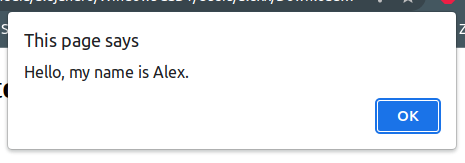
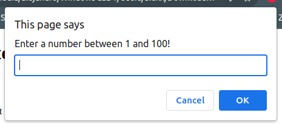

console.log helps us print in the console.
console.log("Hello, my name is Alex.")
RESULTS IN --> Hello, my name is Alex. (Visible in the console.)
It gives a popup to the user, a message they can see on their screen, not in the console.
alert("Hello, my name is Alex.")
RESULTS IN -->
Also a popup, but with a box for the user to enter an input.
prompt("Enter a number between 1 and 100!");
RESULTS IN -->
We can create a variable to save the user input and retrieve it when needed.
Here is the variable we would make:
let userInput = prompt("Enter a number between 1 and 100!");
Let´s say we chose number 7.
userInput;
RESULTS IN --> 7
If we were trying to do any math with the user input, we would first have to convert the string to a number.
We can´t just add 1 for example to the userInput:
userInput + 1;"71"
We would do this with parseInt().
parseInt(userInput);
Now we have a number instead of a string to work with.
If the user´s input has letters or other characters other than numbers, it will try to retrieve only the numbers.
So NOW we can add 1 if wanted:
parseInt(userInput) + 1;
RESULTS IN --> 8